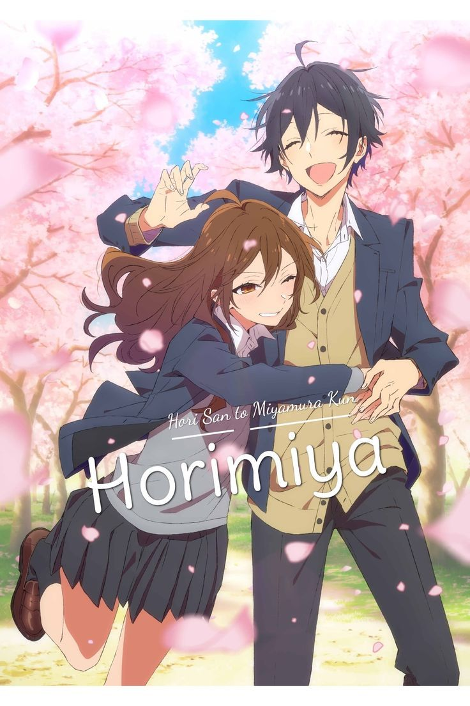

| AnimeSA | Home Top Anime Genres About |
A sweet romantic story about two high school students who discover each other's hidden personalities and slowly fall in love.

Kyoko Hori is a popular high school girl, while Izumi Miyamura appears quiet and lonely.
Outside school, Miyamura has tattoos and piercings, revealing a hidden personality. As they grow closer, their friendship turns into love.
Contains emotional moments and teenage relationship themes.
Horimiya became popular among romance anime fans, known for: